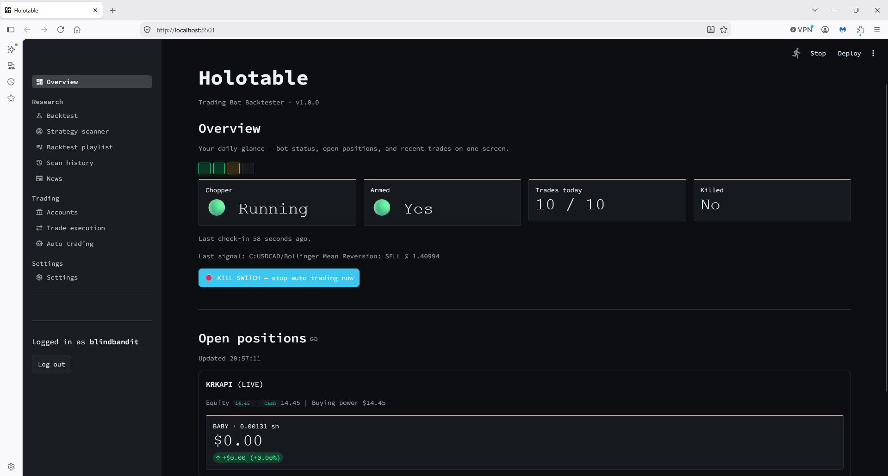
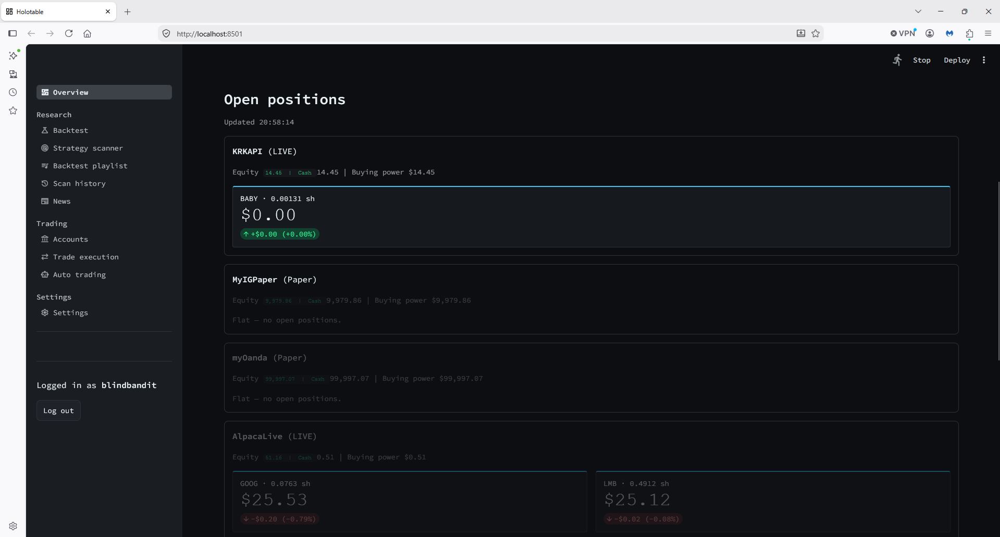
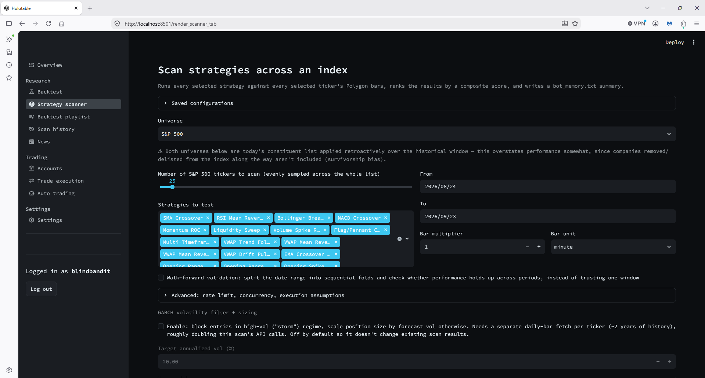
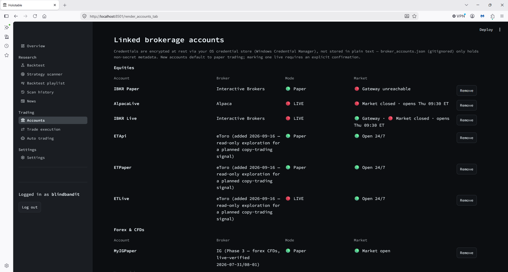
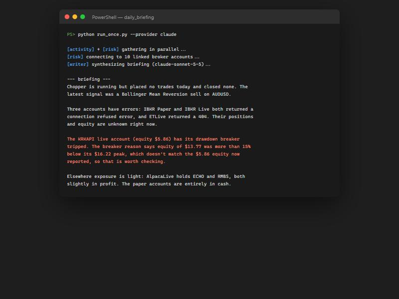

Case Study
A continuously-running trading system integrating six real brokerage APIs across equities, FX, and crypto, with an adaptive strategy-selection framework where nothing reaches live trading without first clearing a rigorous backtest gate.
Currency-mismatch bug causing incorrect order sizing on a live account, traced to a data source silently mislabelling one currency as another. Fixed and covered by a dedicated regression test before being trusted again.
Ticker-translation bug preventing the system from recognising its own open positions after a broker returned asset identifiers in a different format than expected.
Supervisor/watchdog architecture that detects process failures and automatically recovers them, keeping a live, continuously-running system up without manual intervention.
A session-handling limit in a broker's own infrastructure (a live and practice-account connection cannot run concurrently under one login), confirmed by direct, controlled testing rather than accepting the first plausible explanation.




A real multi-agent system orchestrated with LangGraph: two data-gathering agents run in parallel — today's trading activity, and real live risk/exposure across every linked broker account — and fan into a writer agent that turns both into a plain-English daily briefing. Strictly read-only: no node can place, modify, or cancel an order.
A genuine fan-out/fan-in graph, not a linear script dressed up as one: two independent agents gather activity and risk data in parallel, then both feed a single writer agent — verified against the installed LangGraph version's real current API before writing the real nodes.
The risk agent is the only node that reaches outside the machine — real authenticated broker connections, read-only snapshot and position calls only. One broker's connection failing is isolated to that account's own error field rather than taking the whole run down.
Run live against all 10 real linked broker accounts, not a staged demo: two genuine pre-existing account errors surfaced correctly as isolated per-account failures, and the writer's summary named every real number and flag accurately.
Running the real writer against the real Claude API caught something the local-model version didn't: a mismatch between a risk breaker's recorded reason text and the account's actual current equity, flagged as worth checking instead of repeated silently — a specific, concrete difference, not a generic "better prose" claim.

Research tooling for improving the live system's strategies where the agents can never write to it: they propose experiments and measure them on cached data, off-hours and at low priority, and a person decides what is promoted. It is built around one problem — any search that keeps the winner overfits — so most of the work is the rules a result has to pass, and testing that those rules themselves are not fooled.
Pre-registration: an experiment's plan (settings, tickers, windows, costs, baselines) is hashed and written down before anything runs, and an edited plan is refused. Costs are on by default, a result is compared with doing nothing and with the live setting, and a hold-out window can be scanned once, behind an exclusive lock, only for a result that already passed training. The only verdicts are reject, inconclusive and candidate — "worth paper trading, not ready for live money".
My first selection test leaked: simulated on pure noise it passed 16% of the time with 20 settings and 41% with 5. I replaced it with a test that measures the noise of a setting's average from the data itself and demands the winner beat the 97.5th percentile of the best of N — then measured it: 2.5% false passes at 20 settings, 0.2% at 5, while a real edge six noise-widths wide still passed 98% of the time.
Reading the first real experiment: 4 of its 16 settings could never trade. A price cannot sit more than (n−1)/√n sample standard deviations from the mean of its own n-bar window, so a band wider than that never triggers — a quarter of the compute spent on nothing, and a "best of 16" message that should have said 12. Fixed in the rules and the reviewer; the lesson is now a check before any grid is registered.
The real run finished every scan and then crashed writing its verdict: the real scanner's rows carry numpy numbers, comparing them gives numpy booleans, and JSON cannot write those — while my test fakes only ever returned plain floats. Fixed, tested with numpy rows, and resumed from the saved progress with no rescan.
A drift check that compares the closed trades read from the live database (opened read-only) with the same strategy replayed on the same cached bars, matching trades within 15 minutes and flagging a difference only with at least 10 pairs and a z-score of 2.5. It then attributes the trades the bot did not take to the roster's own rules: about two-thirds happened while the pair was benched or paused, a few while a position was already open, and 31% are unexplained — kept as an open question rather than explained away. The paired trades themselves showed no evidence of drift.
A skeptic whose criticisms are computed by code (fragile peak, edge of the grid, thin trades, costs margin, luck, baselines), with a local model allowed only to phrase them and every figure in its wording checked against the data. Measured the wording anyway: it passed the figure check six times in six but misread meaning (4 basis points earned against a 4 basis point cost became "a loss of 2"), so the label says the figures are verified and the wording is not.
A scout that drafts the next experiment from a finished one — extend a grid whose winner sits on an edge, on tickers no earlier experiment used, or a single confirmatory test while the hold-out is unspent — and never registers or runs anything. Running it on the real experiments found its own flaw: a winner on the edge of one grid was the middle of another's, so an edge is now judged against everything already tried. A mutation pass left 13 of 39 mutants alive and closed the real gaps, including a test that shared a folder with every earlier run and hid a write.
On three real experiments: a rejection (luck explained the best setting), a narrow rejection (the same setting won again but missed the luck margin), and a pre-registered confirmatory run on new tickers that earned the lab's first candidate — read as a small, consistent edge that trades twice as often and so is more exposed to real costs, not as a result to act on. Starting an experiment or recording a candidate is an approval in my assistant's queue; promoting a strategy is still my action, in the trading dashboard.
Packaged the trading system into a fully standalone Windows installer requiring no separate Python install, the kind of distribution and deployment engineering most junior portfolios don't touch at all.
Multiple bugs that only existed in the frozen build, invisible in source: a UI framework silently 404ing on static assets, and a module-resolution crash. Each root-caused by actually running the compiled executable, not by trusting a clean build.
End to end via a real install → launch → uninstall cycle on a clean machine state, not just a successful compile.
Reverse-engineered an undocumented third-party trading API directly from its primary developer docs, then built a signal engine that ranks real traders on a composite, risk-adjusted score before anything is acted on.
A poll/diff engine that tracks a watchlist's real position changes and turns them into structured trading signals.
A sector-concentration hypothesis walk-forward across multiple time windows before it was allowed to influence a live strategy roster, not on a single lucky backtest.